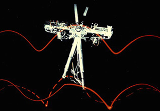

"Planar Biped", eine zweibeinige Laufmaschine wurde am MIT gebaut, um die Steuerung des Laufens von Zweibeinern zu testen, indem Algorithmen für einbeinige Roboter verwendet wurden. Das Steuersystem bestimmt ein aktives Bein und ein untätiges. Das inaktive Bein bleibt eingefahren, während es für den nächsten Schritt vorbereitet wird. "Planar Biped" kann sich in einer modifizierten und einer hüpfenden Gangart fortbewegen und im Laufen die Gangart wechseln. Der Roboter verfügt über zwei Teleskopbeine, die mittels Zapfengelenk mit dem Körper verbunden sind. Die Länge der Beine ist variabel. Der Körper besteht aus einem Aluminiumrahmen.